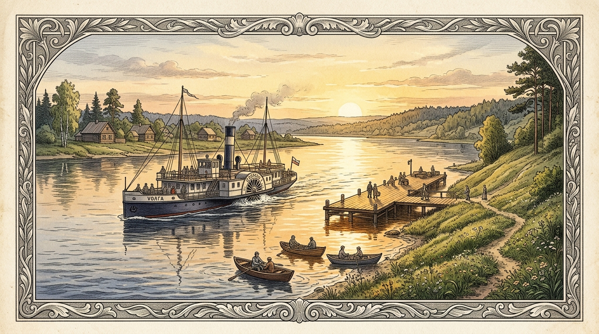

Межпланетный шахматный конгресс в Васюках
Пароход «Скрябин», «сеятель» на плакате и великое будущее Нью-Васюков

На пароходе «Скрябин» Остап создал бессмертный шедевр живописи — «Сеятеля, разбрасывающего облигации» — и успел вскрыть один театральный стул, но и там ничего не оказалось, а за художества обоих спутников высадили на пустынном берегу у тихого волжского городка Васюки.
С двумя червонцами в кармане, не унывая ни секунды, великий гроссмейстер Остап Бендер собрал местный шахматный клуб и нарисовал перед ошеломленными любителями картину ослепительного будущего: первый в истории Межпланетный шахматный конгресс превратит Васюки в столицу мира — Нью-Васюки! Сверхмощная радиостанция, дирижабли, мраморные гостиницы, перенос столицы из Москвы в Васюки...
Собрав по двадцать и пятьдесят рублей с тридцати доверчивых игроков в сеансе одновременной игры (второй раз в жизни держа фигуры в руках), Остап проиграл почти все партии — кроме одной, — но прежде чем рассерженные васюкинцы добрались до «гроссмейстера», концессионеры уже стремительно гребли на лодке вниз по Волге к Чебоксарам.